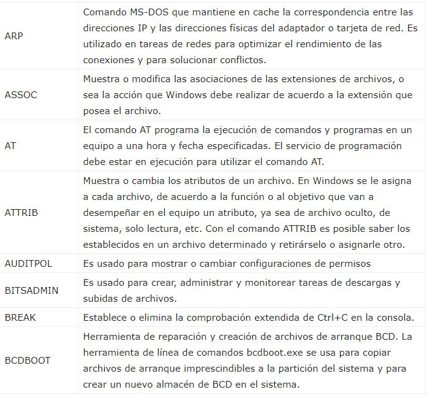
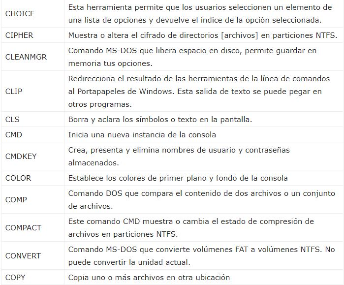

⠀
La consola de comandos CMD la puedes iniciar buscando su acceso en: Todos los programas -> Accesorios o escribiendo en el cuadro de Inicio, en Ejecutar o en Cortana: CMD y presionando la tecla Enter.⠀
El desarrollo de MS-DOS fue a partir de QDOS, Quick Disk Operating System, también conocido como 86-DOS. Su desarrollo se inició oficialmente en 1981 y fue lanzado en 1982 como MS-DOS 1.0. Tuvo nueve versiones principales y alcanzó gran difusión, pero fue gradualmente reemplazado por S.O que ofrecían una interfaz gráfica de usuario (GUI), en particular, por varias generaciones del sistema operativo Microsoft Windows. [MS-2]⠀
Los comandos CMD de Windows son una herencia de los primeros sistemas operativos que funcionaban en MS-DOS. En ellos todas las instrucciones tenían que ser ejecutadas manualmente mediante comandos similares a los de la lista que adjuntamos a continuación. El uso de estos comandos DOS mantiene plena su vigencia a día de hoy.⠀
Estos son algunos de sus comandos:⠀
 